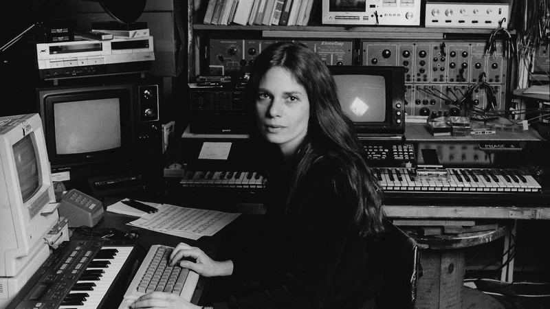

Spiegel composed Patchwork at Bell Labs on the GROOVE system, programming a 4x4 telephone keypad to switch between four melodic motives and four rhythmic patterns in real time. Each of the four voices was composed independently, one at a time, with contrapuntal manipulations drawn from Bach: retrograde, inversion, augmentation, and diminution available on switches and knobs.
The piece was a deliberate reaction against the dominant academic atonal style of the period. She described it as expressing "a light positive energy directly counter to the emotional chaos of most serialism." Its structural roots are in the isorhythmic motet and in banjo music.
Rules generate forms; forms recombine. Six frequency bands, translated into shape and luminosity, modulate continuously. The image follows the same logic the music was built with: process as pattern.